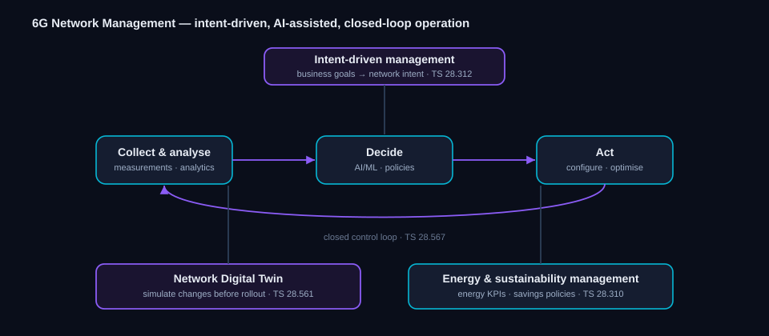

6G Network Management in 3GPP
Learn how 6G networks are meant to run themselves — the management and orchestration work in 3GPP that moves operations toward intent-driven, AI-assisted, closed-loop automation.
Status key: Study = feasibility work. Normative = approved specification content. Planned = Rel-21 scope stated by 3GPP, not yet frozen.
The management picture

Figure 1 — Intent at the top drives a closed control loop (collect → decide → act), supported by a network digital twin and energy management.
6G networks are expected to be too large and dynamic for hands-on operation, so 3GPP's management work (led by the service-and-system management group, SA5) centers on automation: stating goals as intent, closing control loops with analytics and AI, rehearsing changes on a digital twin, and treating energy as a managed resource. The pieces below already exist as management specifications and are the foundation the 6G work builds on.
Intent-driven management
Rather than configuring the network parameter by parameter, operators express what they want as intent — high-level goals the management system then translates into configuration and keeps satisfied as conditions change. This is the organizing idea for autonomous 6G operation. References: intent-driven management TS 28.312. Status: normative, evolving for 6G.
Closed control loops
Automation is structured as a loop: collect and analyse live measurements, decide using policies and AI/ML, then act by reconfiguring or optimising the network — and repeat. The loop is what turns intent into continuous, hands-off operation and is the backbone of "zero-touch" management. References: closed-loop automation TS 28.567; analytics feeds from the core's data-analytics function. Status: normative, evolving for 6G.
Network Digital Twin
A digital twin is a live software copy of the network, kept in step with the real system from ongoing measurements. Operators can rehearse configuration changes, study how faults would spread, and trial new services on the twin before touching production. For 6G it is positioned as a near-real-time companion to management and control, feeding the closed loop with predictions. The twin may be realised through simulation, emulation, AI modelling, or a mix, and captures both the network layout and its performance behaviour. References: management of network digital twins TS 28.561, work item NDT-OAM. Status: normative, active in Rel-20.
AI/ML in management
Management increasingly relies on machine learning — for traffic prediction, anomaly detection, and optimisation decisions inside the control loop. 3GPP defines the management side of the AI/ML functions themselves: how models are trained, deployed, monitored, and retired as part of operations, complementing the core's analytics function. References: AI/ML management TS 28.105; network data analytics TS 23.288. Status: normative, evolving for 6G.
Energy and sustainability management
Energy efficiency is managed, not just hoped for. The management work defines energy-related KPIs, measurement collection, and policies that drive savings — such as scheduling deeper equipment sleep during low demand — and reports energy performance so sustainability goals can be tracked. This connects directly to the radio-side green-RAN work. References: energy-efficiency management TS 28.310; the end-to-end KPI definitions it relies on in TS 28.554; and the underlying performance measurements in TS 28.552. Status: normative, evolving for 6G.
Performance, assurance, and data
Underpinning all of the above is the management data plane: performance measurements, the analytics data that loops consume, and the assurance that intent is actually being met. These collection-and-assurance mechanisms are what let the automation measure its own success and keep the network within its targets. References: performance measurements TS 28.552; end-to-end KPIs TS 28.554; management data analytics and assurance in the SA5 management specifications. Status: normative, evolving.
Management specs and studies at a glance
| Spec / item | Area | Status |
|---|---|---|
| TS 28.312 | Intent-driven management | Normative |
| TS 28.567 | Closed-loop automation | Normative |
| TS 28.561 | Network digital twin management | Normative |
| TS 28.105 | AI/ML management | Normative |
| TS 28.310 | Energy-efficiency management | Normative |
| TS 28.554 | End-to-end KPIs (incl. energy-efficiency KPIs) | Normative |
| TS 28.552 | Performance measurements (PM counters) | Normative |
| TS 23.288 | Network data analytics (AI/ML) | Normative |